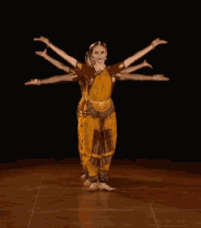
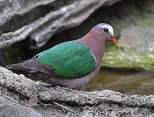

Tamil Nadu is a state in southern India
. The tenth largest Indian state by area and the sixth largest by population, Tamil Nadu is the home of the Tamil people, whose Tamil language—one of the longest surviving classical languages in the world—is widely spoken in the state and serves as its official language. The capital and largest city is Chennai.
Located in the southernmost part of the Indian peninsula, Tamil Nadu is bordered by the Indian union territory of Puducherry
and states ofKerala, Karnataka, and Andhra Pradesh,
as well as an international maritime border with Sri Lanka. Naturally, it is bound by the Western Ghats in the west, the Eastern Ghats in the north, the Bay of Bengal in the east, the Gulf of Mannar and the Palk Strait to the south-east, and the Indian Ocean in the south.
Bharatanatyam is a major form of Indian classical dance that originated in Tamil Nadu. It is one of the eight widely recognized Indian classical dance forms, and expresses South Indian religious themes and spiritual ideas, particularly of Shaivism and in general of Hinduism. A description of Bharatanatyam from the 2nd century CE can be found in the ancient Tamil epic Silappatikaram, while temple sculptures of the 6th to 9th century CE suggest it was a highly refined performance art by the mid-1st millennium CE. Bharatanatyam is the oldest classical dance tradition in India. Bharatanatyam is the state dance form of Tamil Nadu
The common emerald dove (Chalcophaps indica), also called Asian emerald dove and grey-capped emerald dove, is a widespread resident breeding pigeon native to the tropical and subtropical parts of the Indian Subcontinent and Southeast Asia. The dove is also known by the names of green dove and green-winged pigeon. The common emerald dove is the state bird of the Indian state of Tamil Nadu. The Pacific emerald dove and Stephan's emerald dove were both considered conspecific.
The jackfruit (Artocarpus heterophyllus), also known as the jack tree, is a species of tree in the fig, mulberry, and breadfruit family (Moraceae). Its origin is in the region between the Western Ghats of southern India, all of Bangladesh, Sri Lanka, and the rainforests of the Philippines, Indonesia, and Malaysia. The jackfruit tree is well-suited to tropical lowlands and is widely cultivated throughout tropical regions of the world. It bears the largest fruit of all trees, reaching as much as 55 kg (120 pounds) in weight,90 cm (35 inches) length, and 50 cm (20 inches) in diameter. A mature jackfruit tree produces some 200 fruits per year, with older trees bearing up to 500 fruits in a year. The jackfruit is a multiple fruit composed of hundreds to thousands of individual flowers, and the fleshy petals of the unripe fruit are eaten. The ripe fruit is sweet (depending on variety) and is commonly used in desserts. Canned green jackfruit has a mild taste and meat-like texture that lends itself to being called "vegetable meat".
_____________________TOP_____________________